23/01/2023 — Đau ngực, và khoa Tim mạch đã không nhận ra gợi ý từ ICD
Bản dịch tiếng Việt của bài "Chest pain, and Cardiology didn’t take the hint from the ICD" – Dr. Smith’s ECG Blog. Giữ nguyên toàn bộ 13 hình ảnh và 2 video của bản gốc.
Gửi và viết bởi Megan Lieb, DO, với phần biên tập của Bracey, Smith, Meyers và Grauer
Một người đàn ông khoảng 50 tuổi có đặt máy khử rung tim cấy được (ICD) đến khoa cấp cứu vì đau ngực sau xương ức đã 3 giờ trước khi đến viện. Bác sĩ sàng lọc cho ghi điện tâm đồ và ghi nhận bệnh nhân có vẻ ngoài xám tái và vật vã mức độ vừa.
Điện tâm đồ lúc phân loại (triage):

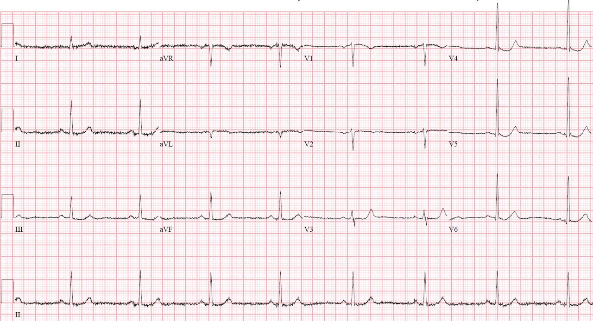
Diễn giải của bác sĩ phân loại:
-nhịp chậm xoang
-ST chênh xuống ở các chuyển đạo bên
Mặc dù có ST chênh xuống ở các chuyển đạo bên (V5, V6), ST chênh xuống sâu nhất lại ở V4. Ngoài ra, chuyển đạo V3 có ST chênh xuống, điều này luôn bất thường (nhớ rằng trong điều kiện bình thường chuyển đạo V3 sẽ có ST chênh lên!)
Smith: một điều CỰC KỲ quan trọng nữa là đoạn ST dốc xuống ở V3. Đây là một dấu hiệu rất đặc hiệu của OMI thành sau. Ngoài ra, V2 có sóng T rất dẹt, điển hình của OMI thành sau.

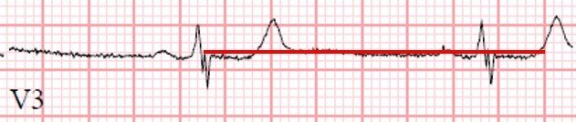

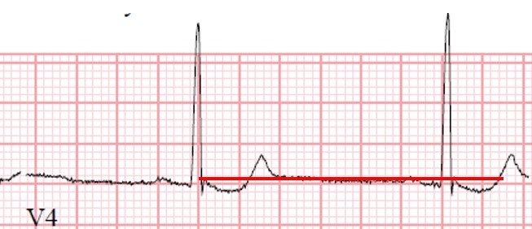
Chỉ riêng điện tâm đồ này đã rất đáng nghi OMI thành sau! Có thể nhận ra hình ảnh này nhờ ST chênh xuống tối đa ở chuyển đạo V4. Nhớ rằng, trong bối cảnh có triệu chứng hội chứng vành cấp (ACS), ST chênh xuống tối đa ở các chuyển đạo V1-V4 (thay vì V5 và V6) mà không do phức bộ QRS bất thường là đặc hiệu cho OMI.
Meyers HP, Bracey A, Lee D, Lichtenheld A, Li WJ, Singer DD, Rollins Z, Kane JA, Dodd KW, Meyers KE, Shroff GR, Singer AJ, Smith SW. Ischemic ST-Segment Depression Maximal in V1-V4 (Versus V5-V6) of Any Amplitude Is Specific for Occlusion Myocardial Infarction (Versus Nonocclusive Ischemia). Tạp chí J Am Heart Assoc. 2021, ngày 7 tháng Mười Hai;10(23):e022866. doi: 10.1161/JAHA.121.022866. Bản điện tử ngày 15 tháng Mười Một năm 2021. PMID: 34775811; PMCID: PMC9075358
Siêu âm tại giường đã được thực hiện, như dưới đây:
Mặt cắt trục ngắn cạnh ức cho thấy vô động thành dưới thất trái
Mặt cắt 2 buồng từ mỏm một lần nữa cho thấy vô động thành dưới thất trái
Phòng thông tim (cath lab) không được kích hoạt dựa trên điện tâm đồ và siêu âm tim tại giường.
Quay lại ca bệnh:
Sau khi được đưa vào phòng khám bệnh, bệnh nhân cho biết đã bị nhiều cơn ngất trong 24 giờ qua, mỗi cơn đều dẫn đến một cú sốc điện, và theo lời vợ ông thì sau đó ông tỉnh lại ngay. Cơn gần nhất xảy ra ngay trước khi được phân loại.
Lúc này bệnh nhân cho biết vẫn còn đau ngực và được cho dùng aspirin và nitroglycerin. Bệnh nhân được lấy máu xét nghiệm và ghi lại điện tâm đồ:

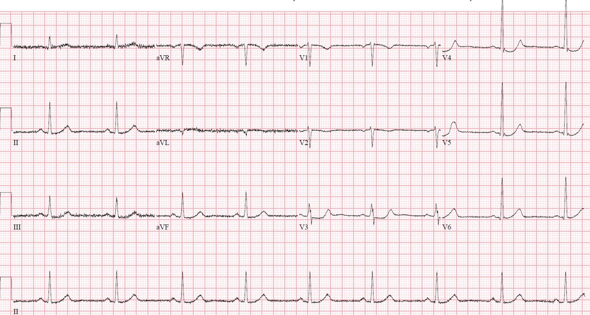

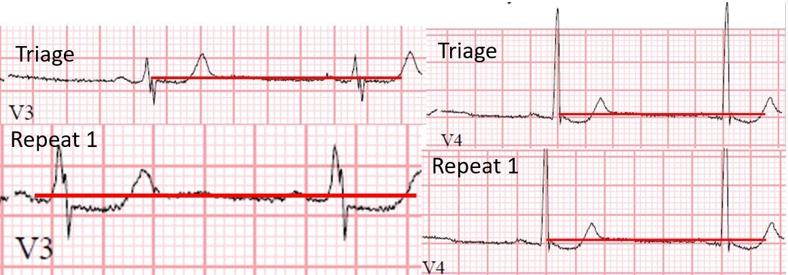
Trong lúc chuẩn bị kiểm tra ICD, bác sĩ tim mạch can thiệp được mời hội chẩn để đánh giá chỉ định thông tim cấp cứu. Sau khi xem xét các thông tin hiện có, khoa tim mạch cho rằng bệnh nhân không cần PCI cấp cứu và khuyến cáo truyền heparin và thông tim vào sáng hôm sau.
Vào khoảng thời gian này, có kết quả troponin I là 0.05 ng/mL (giới hạn trên bình thường – ULN 0.04).
Lúc này ghi thêm một điện tâm đồ thứ hai:

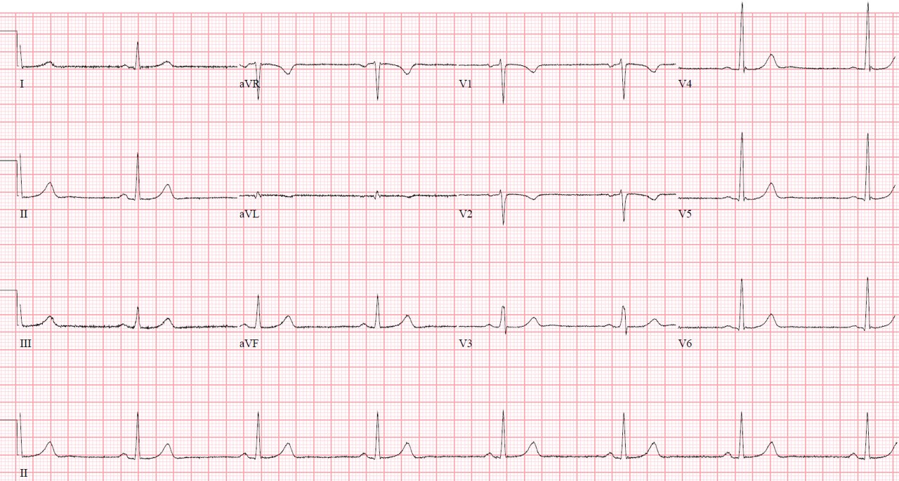
Đồng thời lúc này cũng ghi một điện tâm đồ chuyển đạo phía sau:

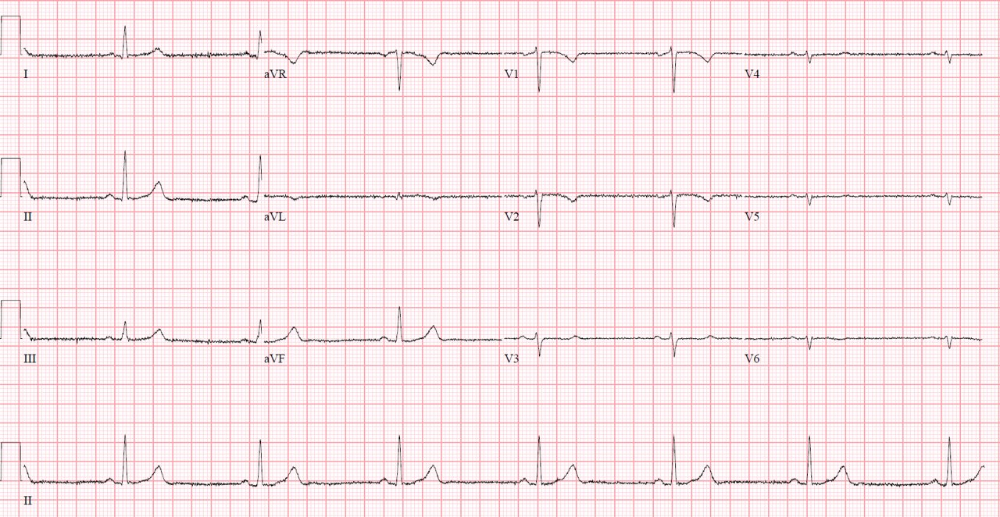
Không có ST chênh lên ở các chuyển đạo phía sau (V7-V9)
Nhưng không thể kỳ vọng có STE ở V7-V9 vì STD ở V3, V4 đã hết.
Khoa tim mạch xem điện tâm đồ chuyển đạo phía sau và một lần nữa kết luận rằng vì không có ST chênh lên ở các chuyển đạo phía sau nên không cần PCI cấp cứu. Tuy nhiên, cần lưu ý rằng lẽ ra không nên kỳ vọng có ST chênh lên ở các chuyển đạo phía sau trên điện tâm đồ này vì ST chênh xuống ở các chuyển đạo trước đã hết! Mạch máu nhiều khả năng đã thông hoặc gần như thông vào thời điểm ghi điện tâm đồ này.
Khi ICD cuối cùng được kiểm tra, các cơn ngất và các cú sốc điện tương ứng với hai cơn rung thất (VF) đã được khử rung thành công.
Smith: Đây là sự thất bại của các bác sĩ tim mạch trong việc tuân thủ chính khuyến cáo của họ, vốn nêu rằng ACS kèm bất ổn điện học cần được đưa vào phòng thông tim cấp cứu
Khoa tim mạch đã được báo về các cơn VF và các thay đổi điện tâm đồ động (dynamic) rõ ràng nhưng vẫn cho rằng không có chỉ định thông tim ngay, và thay vào đó hoãn thông tim đến sáng hôm sau.
Troponin I xét nghiệm lại tăng lên 0.07 ng/mL và 7.59 ng/mL, lần lượt vào giờ thứ 4 và thứ 7 kể từ khi đến viện. Nồng độ troponin I huyết thanh ngay trước thủ thuật thông tim là 16.69 ng/mL.

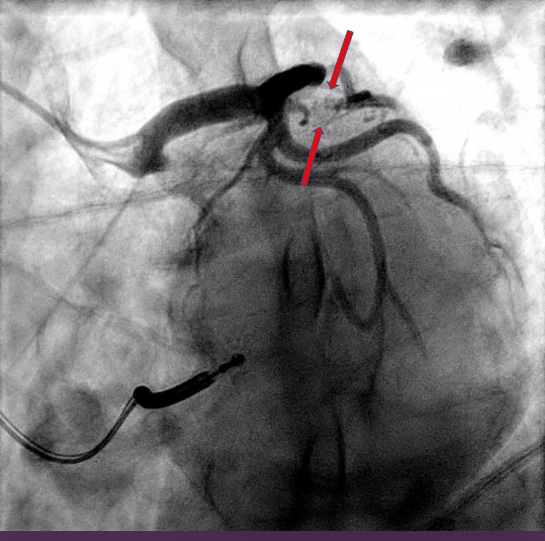
Nhánh trung gian (ramus intermedius) là một biến thể bình thường của giải phẫu mạch vành, xuất phát giữa LAD và LCX. Đường đi của nhánh này thay đổi, thường cấp máu cho thành bên thất trái. Trong ca này, nhánh này cấp máu cho một phần tuần hoàn thành sau thất trái.

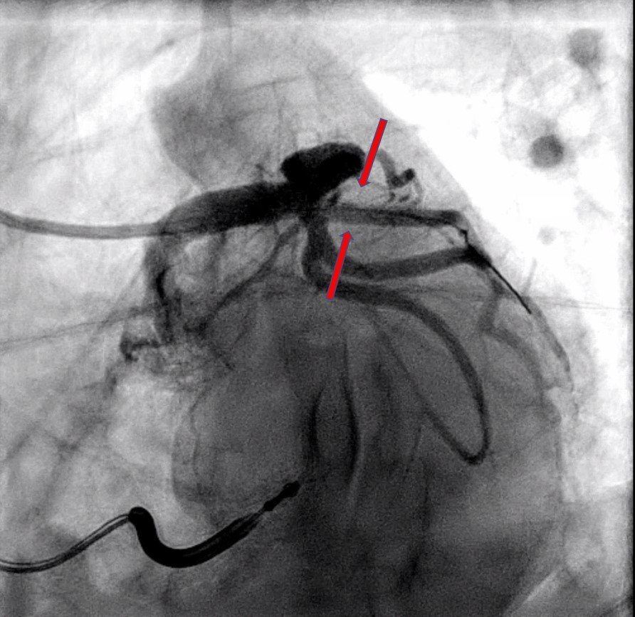
Điện tâm đồ sau thủ thuật được ghi 24 giờ sau PCI:

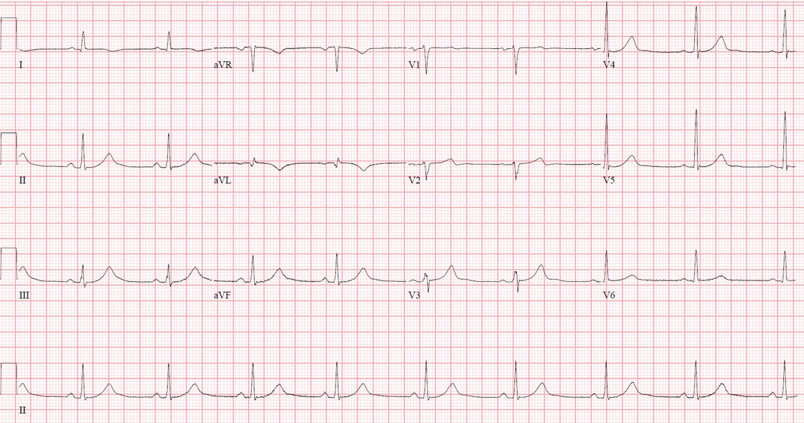
Lưu ý rằng các chuyển đạo V2-4 cho thấy sóng T tái tưới máu thành sau (nay dương hơn ở các chuyển đạo này, vì chúng là hình soi gương của sóng T tái tưới máu đảo ngược, âm ở các chuyển đạo phía sau). Chuyển đạo aVL cũng cho thấy hình ảnh tái tưới máu điển hình, chỉ ra tái tưới máu thành bên cao.

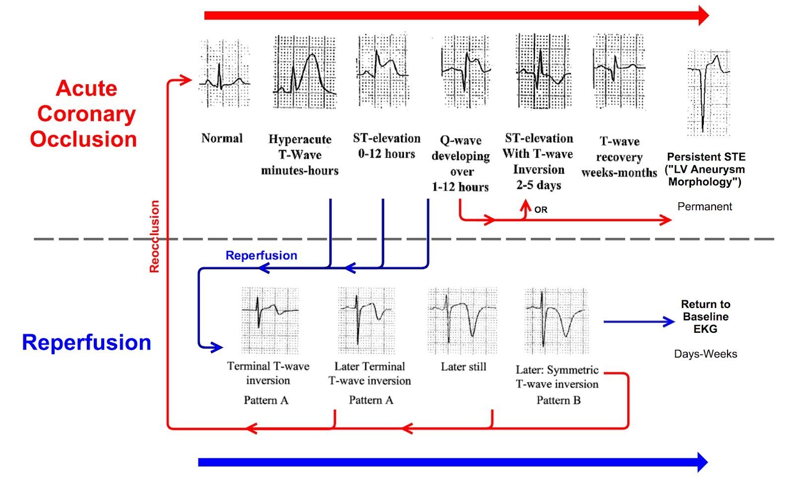
Bệnh nhân được bắt đầu liệu pháp kháng tiểu cầu kép (DAPT) và xuất viện vào ngày thứ 3 mà không có thêm biến cố nào.
Điều cần nhớ:
ST chênh xuống tối đa ở các chuyển đạo V1-V4 (không do nguyên nhân khác như phức bộ QRS bất thường) có độ đặc hiệu cao cho OMI thành sau ở bệnh nhân có triệu chứng thiếu máu cục bộ mới xuất hiện.
Các điện tâm đồ liên tiếp thường hữu ích trong việc nhận ra những biểu hiện điện tâm đồ kín đáo hơn của OMI
Các chuyển đạo phía sau thường có rất ít hoặc không có ST chênh lên ngay cả khi có OMI thành sau, do mô phổi nằm giữa thành sau thất trái và thành ngực sau. Tuy nhiên, khi ST chênh xuống đã hết thì cũng sẽ không có ST chênh lên ở các chuyển đạo phía sau, như ca này cho thấy. Nhớ rằng không khí dẫn điện kém và do đó sẽ tạo ra biên độ nhỏ hơn ở các chuyển đạo phía sau (vì vậy tiêu chuẩn STEMI chỉ đòi hỏi >0.5 mm ở bất kỳ chuyển đạo phía sau nào để được xem là dương tính). Vì thế, điều thiết yếu là bạn phải nhận ra được OMI thành sau trên điện tâm đồ 12 chuyển đạo theo vị trí chuẩn!
Rung thất là kết cục thường gặp trong OMI và cần làm tăng mạnh mức nghi ngờ bệnh tim thiếu máu cục bộ ngay cả khi không có ST chênh lên rõ rệt.

==================================
BÌNH LUẬN CỦA TÔI, bởi KEN GRAUER, MD (23/1/2023):
==================================
Tầm quan trọng của ca hôm nay do các bác sĩ Lieb, Bracey, Meyers & Smith trình bày — nằm ở chỗ những tình huống tương tự xảy ra thường xuyên đến mức nào. Phòng thông tim đã không được kích hoạt sau khi xem điện tâm đồ ban đầu. Để rõ ràng, trong Hình 1 — tôi đã trình bày lại bản ghi ban đầu này.
- Với bệnh sử đau ngực mới khởi phát và vẻ ngoài ban đầu của bệnh nhân được mô tả là “xám tái và vật vã mức độ vừa” — lẽ ra phòng thông tim phải được kích hoạt ngay khi thấy điện tâm đồ #1.

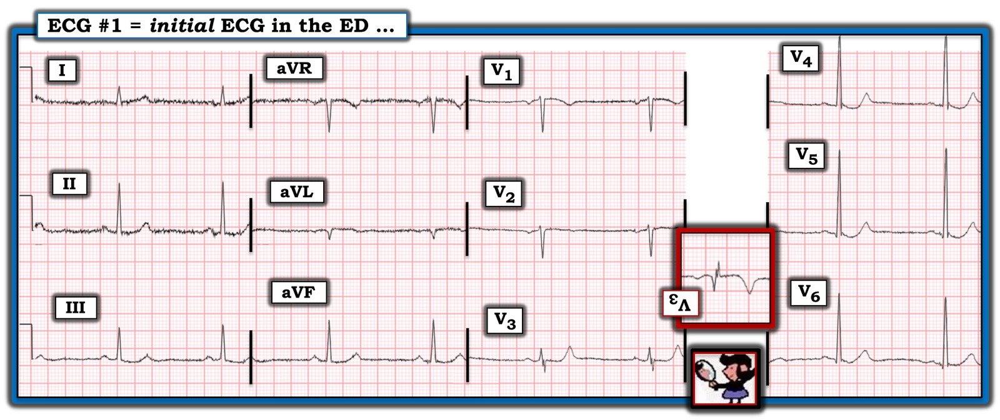
TẠI SAO phòng thông tim lẽ ra phải được kích hoạt ngay lập tức:
Như phần bàn luận ca bệnh ở trên của các bác sĩ Lieb và Bracey — điện tâm đồ #1 rất đáng nghi OMI thành sau cấp (nhồi máu cơ tim do tắc — Occlusion-based MI) vì ST chênh xuống ở các chuyển đạo ngực đạt tối đa ở chuyển đạo V4 — và vì ST chênh xuống ở chuyển đạo V3 đã thay thế cho đoạn ST chênh lên nhẹ dốc lên vốn thường thấy ở chuyển đạo này.
- Những “tình huống tương tự” mà tôi nhắc đến ở câu mở đầu — liên quan đến 3 Thiếu sót mà quá nhiều bác sĩ lâm sàng mắc phải. Những thiếu sót này là: i) Không nhận ra “hình dạng“ đặc trưng của ST-T chênh xuống ở các chuyển đạo ngực trước, mà khi gặp ở bệnh nhân đau ngực mới xuất hiện thì là dấu hiệu chỉ điểm OMI thành sau cấp; ii) Không nhận ra rằng động mạch “thủ phạm“ trong nhiều ca nhồi máu do tắc cấp sẽ tự mở lại (nhờ đó được tái tưới máu) ngay cả khi không điều trị — đôi khi mở ra, rồi đóng lại, rồi lại mở ra nhiều lần cho đến khi mạch máu đạt trạng thái cuối cùng; và, iii) Ngay cả khi không có ST chênh lên — một bệnh nhân đau ngực do tim mới khởi phát và kéo dài đi kèm ST chênh xuống do thiếu máu cục bộ là có chỉ định thông tim sớm.
Nghiệm pháp “soi gương” (Mirror Test) dương tính trong Hình 1:
Hơn nhiều so với chỉ riêng mức độ ST chênh xuống ở các chuyển đạo V3 và V4 của điện tâm đồ #1 — chính hình dạng của ST-T ở chuyển đạo V3 đã ngay lập tức cho tôi biết người đàn ông khoảng 50 tuổi trong ca hôm nay đang bị OMI thành sau cấp.
- Tôi không hiểu vì sao hình ảnh bất thường ST-T thấy ở chuyển đạo V3 của điện tâm đồ #1 vẫn tiếp tục bị quá nhiều bác sĩ lâm sàng bỏ sót. Tôi thấy cách dễ nhất để giúp nhận biết dấu hiệu điện tâm đồ quan trọng này — là dùng Nghiệm pháp Soi gương. Như tôi đã minh họa nhiều lần trên Dr. Smith’s ECG Blog, Nghiệm pháp Soi gương đơn giản là một công cụ hỗ trợ trực quan giúp nhận ra OMI thành sau cấp từ điện tâm đồ 12 chuyển đạo chuẩn mà không cần đặt các chuyển đạo phía sau (Xem Bình luận của tôi ở cuối trang trong bài đăng ngày 21 tháng Chín năm 2022).
- Cơ sở của Nghiệm pháp Soi gương dựa trên tiền đề rằng các chuyển đạo phía trước cung cấp hình ảnh soi gương của hoạt động điện ở thành sau thất trái. Chỉ cần lật ngược một điện tâm đồ 12 chuyển đạo chuẩn, rồi giơ lên soi dưới ánh sáng — bạn có thể dễ dàng hình dung “ảnh soi gương” của các chuyển đạo từ V1 đến V4.
- Trong Hình 1 — chuyển đạo chính cho thấy Nghiệm pháp soi gương dương tính là chuyển đạo V3 (Thấy trong ô chèn ảnh soi gương phóng to, viền ĐỎ của chuyển đạo V3). CÂU HỎI: Chẳng phải hình dạng của đoạn ST hơi chênh lên, đi kèm sóng T đảo ngược sâu và đối xứng ở chuyển đạo này gợi ý nhồi máu cấp sao?
Không nhận ra tái tưới máu tự phát
Mặc dù đoạn ST thẳng đuỗn dạng bậc thềm ở chuyển đạo V3 của Hình 1 là điển hình của OMI thành sau cấp — mức độ ST chênh xuống ở chuyển đạo này chỉ vừa phải. Thay vào đó — sóng T ở chuyển đạo V3 nhọn rõ rệt và cao hơn sóng R ở cùng chuyển đạo.
- Như được gợi ý trong Hình 1 bởi sóng T đảo ngược sâu trong ô chèn viền ĐỎ — sóng T nhọn ở chuyển đạo V3 gợi ý mạnh rằng đã có ít nhất một phần tái tưới máu của động mạch “thủ phạm”. Việc điều này có thể xảy ra không nên khiến ta ngạc nhiên — vì cơn đau ngực của bệnh nhân đã kéo dài 3 giờ trước khi đến khoa cấp cứu.
- Bằng chứng bổ sung ủng hộ tái tưới máu tự phát động mạch “thủ phạm” ở điện tâm đồ #1 — được gợi ý bởi đoạn ST phẳng ở chuyển đạo V2 kế cận. Trong OMI thành sau cấp — ST chênh xuống thường rõ nhất ở các chuyển đạo V2,V3,V4 — vì vậy đoạn ST phẳng ở chuyển đạo V2 có lẽ phản ánh phần nào sự trở về đường nền của ST chênh xuống mà nhiều khả năng đã có trước đó ở chuyển đạo V2.
- Bằng chứng cuối cùng ủng hộ mạnh mẽ cho việc động mạch “thủ phạm” nhiều lần tự mở lại rồi đóng lại — đã xuất hiện khi bệnh nhân cho biết bị nhiều cơn ngất ở nhà trong 24 giờ trước đó, mỗi cơn đều kết thúc bằng một cú sốc điện từ ICD đã cấy.
ĐIỀU CỐT LÕI trong ca hôm nay:
Như chúng tôi đã trình bày nhiều lần trên Dr. Smith’s ECG Blog — một động mạch “thủ phạm” tự mở lại — có thể tự đóng lại vào bất kỳ lúc nào. Điều này nhiều khả năng đã xảy ra nhiều lần trong ca hôm nay. Điều trị tối ưu cho bệnh nhân hôm nay lẽ ra là thông tim sớm kèm PCI động mạch “thủ phạm” với mục tiêu duy trì tưới máu mạch vành.
- Vẻ ngoài “xám tái” của bệnh nhân kèm đau ngực đang tiếp diễn lúc đến khoa cấp cứu — đi kèm các thay đổi đoạn ST lan tỏa trên điện tâm đồ ban đầu — lẽ ra đã đủ để chỉ định thông tim sớm, ngay cả khi không nhận ra rằng hình ảnh ST-T ở chuyển đạo V3 của điện tâm đồ #1 có giá trị chẩn đoán OMI thành sau cấp.
- Nếu vẫn còn nghi ngờ về nhu cầu thông tim sau khi xem điện tâm đồ ban đầu — thì bệnh sử gần đây có 2 cơn ngất đều được cắt bằng sốc điện của ICD — và/hoặc — các thay đổi ST-T động sau đó trên các điện tâm đồ liên tiếp lẽ ra đã thừa đủ tiêu chuẩn để thông tim sớm.